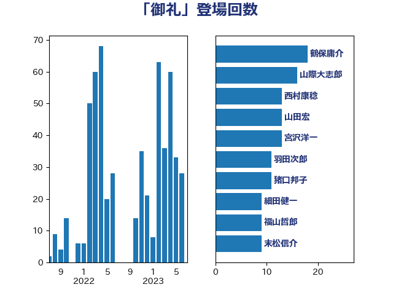

単語「御礼」

| 鶴保庸介 | 自由民主党 | 18 回 |
| 山際大志郎 | 自由民主党 | 16 回 |
| 西村康稔 | 自由民主党 | 13 回 |
| 山田宏 | 自由民主党 | 13 回 |
| 宮沢洋一 | 自由民主党 | 13 回 |
| 羽田次郎 | 立憲民主党 | 11 回 |
| 猪口邦子 | 自由民主党 | 11 回 |
| 細田健一 | 自由民主党 | 9 回 |
| 福山哲郎 | 立憲民主党 | 9 回 |
| 末松信介 | 自由民主党 | 9 回 |
| 山本順三 | 自由民主党 | 9 回 |
| 井林辰憲 | 自由民主党 | 8 回 |
| 石井準一 | 自由民主党 | 6 回 |
| 杉久武 | 公明党 | 6 回 |
| 三原じゅん子 | 自由民主党 | 6 回 |
| 野村哲郎 | 自由民主党 | 5 回 |
| 酒井庸行 | 自由民主党 | 5 回 |
| 森英介 | 自由民主党 | 5 回 |
| 林芳正 | 自由民主党 | 5 回 |
| 平沼正二郎 | 自由民主党 | 5 回 |
| 小西洋之 | 立憲民主党 | 5 回 |
| 國重徹 | 公明党 | 5 回 |
| 吉川沙織 | 立憲民主党 | 5 回 |
| 三宅伸吾 | 自由民主党 | 5 回 |
| 青木愛 | 立憲民主党 | 4 回 |
| 青木一彦 | 自由民主党 | 4 回 |
| 長谷川岳 | 自由民主党 | 4 回 |
| 鈴木馨祐 | 自由民主党 | 4 回 |
| 竹内譲 | 公明党 | 4 回 |
| 矢倉克夫 | 公明党 | 4 回 |
| 櫻井充 | 自由民主党 | 4 回 |
| 橋本岳 | 自由民主党 | 4 回 |
| 根本匠 | 自由民主党 | 4 回 |
| 斎藤嘉隆 | 立憲民主党 | 4 回 |
| 山田賢司 | 自由民主党 | 4 回 |
| 小野泰輔 | 日本維新の会 | 4 回 |
| 小沢雅仁 | 立憲民主党 | 4 回 |
| 宮内秀樹 | 自由民主党 | 4 回 |
| 堀内詔子 | 自由民主党 | 4 回 |
| 保岡宏武 | 自由民主党 | 4 回 |
| 伊藤忠彦 | 自由民主党 | 4 回 |
| 伊藤孝恵 | 国民民主党 | 4 回 |
| 西野太亮 | 自由民主党 | 3 回 |
| 蓮舫 | 立憲民主党 | 3 回 |
| 葉梨康弘 | 自由民主党 | 3 回 |
| 福島みずほ | 社会民主党 | 3 回 |
| 石橋通宏 | 立憲民主党 | 3 回 |
| 石原正敬 | 自由民主党 | 3 回 |
| 柴田巧 | 日本維新の会 | 3 回 |
| 木原稔 | 自由民主党 | 3 回 |
| 山井和則 | 立憲民主党 | 3 回 |
| 寺田学 | 立憲民主党 | 3 回 |
| 加田裕之 | 自由民主党 | 3 回 |
| 三ッ林裕巳 | 自由民主党 | 3 回 |
| 高橋克法 | 自由民主党 | 2 回 |
| 馬場成志 | 自由民主党 | 2 回 |
| 阿達雅志 | 自由民主党 | 2 回 |
| 関芳弘 | 自由民主党 | 2 回 |
| 長浜博行 | 無所属 | 2 回 |
| 鈴木貴子 | 自由民主党 | 2 回 |
| 金子恵美 | 立憲民主党 | 2 回 |
| 赤羽一嘉 | 公明党 | 2 回 |
| 芳賀道也 | 国民民主党 | 2 回 |
| 舟山康江 | 国民民主党 | 2 回 |
| 義家弘介 | 自由民主党 | 2 回 |
| 稲津久 | 公明党 | 2 回 |
| 秋野公造 | 公明党 | 2 回 |
| 福岡資麿 | 自由民主党 | 2 回 |
| 石川大我 | 立憲民主党 | 2 回 |
| 盛山正仁 | 自由民主党 | 2 回 |
| 深澤陽一 | 自由民主党 | 2 回 |
| 浅田均 | 日本維新の会 | 2 回 |
| 根本幸典 | 自由民主党 | 2 回 |
| 枝野幸男 | 立憲民主党 | 2 回 |
| 松沢成文 | 日本維新の会 | 2 回 |
| 新藤義孝 | 自由民主党 | 2 回 |
| 徳永エリ | 立憲民主党 | 2 回 |
| 平口洋 | 自由民主党 | 2 回 |
| 岸田文雄 | 自由民主党 | 2 回 |
| 山谷えり子 | 自由民主党 | 2 回 |
| 山本啓介 | 自由民主党 | 2 回 |
| 山岸一生 | 立憲民主党 | 2 回 |
| 山下雄平 | 自由民主党 | 2 回 |
| 宮崎雅夫 | 自由民主党 | 2 回 |
| 室井邦彦 | 日本維新の会 | 2 回 |
| 大西英男 | 自由民主党 | 2 回 |
| 塚田一郎 | 自由民主党 | 2 回 |
| 国定勇人 | 自由民主党 | 2 回 |
| 吉田宣弘 | 公明党 | 2 回 |
| 古賀友一郎 | 自由民主党 | 2 回 |
| 古屋範子 | 公明党 | 2 回 |
| 北側一雄 | 公明党 | 2 回 |
| 加藤勝信 | 自由民主党 | 2 回 |
| 中野英幸 | 自由民主党 | 2 回 |
| 中根一幸 | 自由民主党 | 2 回 |
| 中曽根弘文 | 自由民主党 | 2 回 |
| 世耕弘成 | 自由民主党 | 2 回 |
| 上田勇 | 公明党 | 2 回 |
| 三谷英弘 | 自由民主党 | 2 回 |
| 三反園訓 | 無所属 | 2 回 |
| 鰐淵洋子 | 公明党 | 1 回 |
| 鬼木誠 | 立憲民主党 | 1 回 |
| 馬場雄基 | 立憲民主党 | 1 回 |
| 馬場伸幸 | 日本維新の会 | 1 回 |
| 音喜多駿 | 日本維新の会 | 1 回 |
| 青山周平 | 自由民主党 | 1 回 |
| 阿部知子 | 立憲民主党 | 1 回 |
| 長谷川英晴 | 自由民主党 | 1 回 |
| 長島昭久 | 自由民主党 | 1 回 |
| 長峯誠 | 自由民主党 | 1 回 |
| 鈴木庸介 | 立憲民主党 | 1 回 |
| 金子道仁 | 日本維新の会 | 1 回 |
| 重徳和彦 | 立憲民主党 | 1 回 |
| 近藤和也 | 立憲民主党 | 1 回 |
| 足立敏之 | 自由民主党 | 1 回 |
| 谷田川元 | 立憲民主党 | 1 回 |
| 西田実仁 | 公明党 | 1 回 |
| 西岡秀子 | 国民民主党 | 1 回 |
| 若松謙維 | 公明党 | 1 回 |
| 若宮健嗣 | 自由民主党 | 1 回 |
| 舩後靖彦 | れいわ新選組 | 1 回 |
| 自見はなこ | 自由民主党 | 1 回 |
| 簗和生 | 自由民主党 | 1 回 |
| 笹川博義 | 自由民主党 | 1 回 |
| 窪田哲也 | 公明党 | 1 回 |
| 稲田朋美 | 自由民主党 | 1 回 |
| 福重隆浩 | 公明党 | 1 回 |
| 神谷裕 | 立憲民主党 | 1 回 |
| 田野瀬太道 | 無所属 | 1 回 |
| 田嶋要 | 立憲民主党 | 1 回 |
| 田島麻衣子 | 立憲民主党 | 1 回 |
| 田中良生 | 自由民主党 | 1 回 |
| 甘利明 | 自由民主党 | 1 回 |
| 牧島かれん | 自由民主党 | 1 回 |
| 牧原秀樹 | 自由民主党 | 1 回 |
| 片山さつき | 自由民主党 | 1 回 |
| 熊谷裕人 | 立憲民主党 | 1 回 |
| 熊田裕通 | 自由民主党 | 1 回 |
| 浅川義治 | 日本維新の会 | 1 回 |
| 江藤拓 | 自由民主党 | 1 回 |
| 櫻井周 | 立憲民主党 | 1 回 |
| 横山信一 | 公明党 | 1 回 |
| 森山裕 | 自由民主党 | 1 回 |
| 松村祥史 | 自由民主党 | 1 回 |
| 松本剛明 | 自由民主党 | 1 回 |
| 松木けんこう | 立憲民主党 | 1 回 |
| 松島みどり | 自由民主党 | 1 回 |
| 松下新平 | 自由民主党 | 1 回 |
| 杉本和巳 | 日本維新の会 | 1 回 |
| 本田顕子 | 自由民主党 | 1 回 |
| 朝日健太郎 | 自由民主党 | 1 回 |
| 有村治子 | 自由民主党 | 1 回 |
| 斉藤鉄夫 | 公明党 | 1 回 |
| 島尻安伊子 | 自由民主党 | 1 回 |
| 岩谷良平 | 日本維新の会 | 1 回 |
| 岩本剛人 | 自由民主党 | 1 回 |
| 岩屋毅 | 自由民主党 | 1 回 |
| 山本左近 | 自由民主党 | 1 回 |
| 山本佐知子 | 自由民主党 | 1 回 |
| 小森卓郎 | 自由民主党 | 1 回 |
| 小林鷹之 | 自由民主党 | 1 回 |
| 小林一大 | 自由民主党 | 1 回 |
| 安江伸夫 | 公明党 | 1 回 |
| 守島正 | 日本維新の会 | 1 回 |
| 奥下剛光 | 日本維新の会 | 1 回 |
| 大野敬太郎 | 自由民主党 | 1 回 |
| 大塚耕平 | 国民民主党 | 1 回 |
| 塩川鉄也 | 日本共産党 | 1 回 |
| 塩崎彰久 | 自由民主党 | 1 回 |
| 堀井学 | 自由民主党 | 1 回 |
| 城内実 | 自由民主党 | 1 回 |
| 坂井学 | 自由民主党 | 1 回 |
| 古川俊治 | 自由民主党 | 1 回 |
| 北神圭朗 | 無所属 | 1 回 |
| 加藤鮎子 | 自由民主党 | 1 回 |
| 伊藤渉 | 公明党 | 1 回 |
| 伊佐進一 | 公明党 | 1 回 |
| 今枝宗一郎 | 自由民主党 | 1 回 |
| 中谷真一 | 自由民主党 | 1 回 |
| 中山展宏 | 自由民主党 | 1 回 |
| 上野賢一郎 | 自由民主党 | 1 回 |
| 上田英俊 | 自由民主党 | 1 回 |
| たがや亮 | れいわ新選組 | 1 回 |